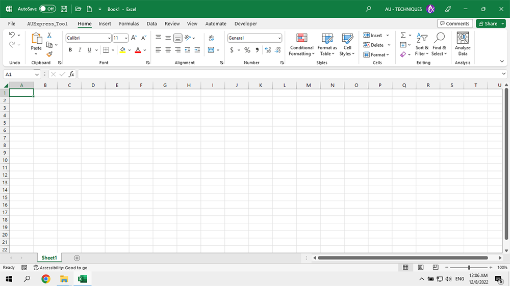
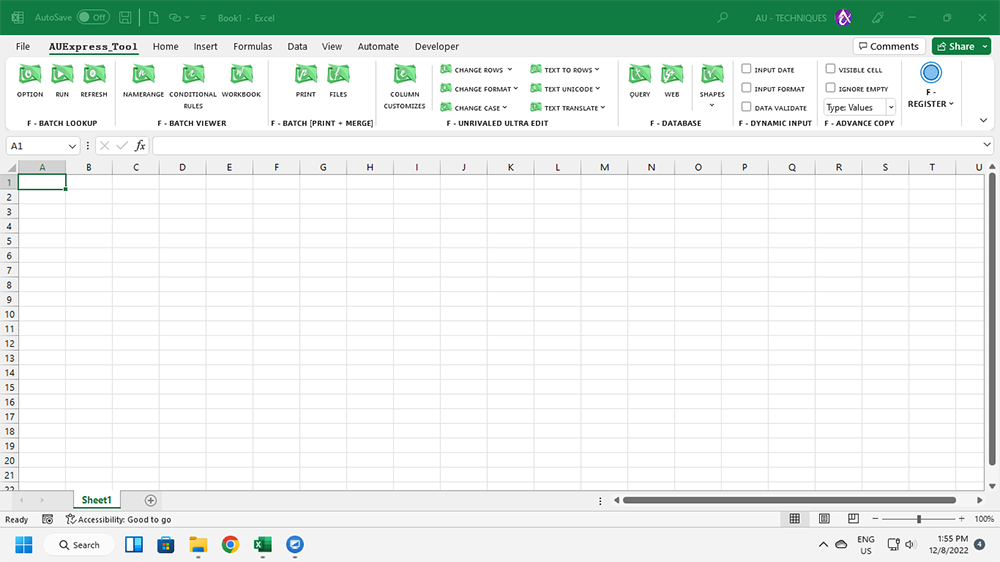

Hình 1: Excel365 khi cài đặt trên windows 10.
Hình 2: Excel365 khi cài đặt trên windows 11.
Hình 3: Kiểm tra các hàm mới sau khi cài đặt thành công Addin trên Excel365.

Mặc dù Addins tương thích với mọi phiên bản Excel nhưng để sử dụng full tính năng, vui lòng cài đặt Excel365-64bit.
Để cài đặt Excel365, bạn cần gỡ bỏ sạch các phiên bản Excel cũ. (Thời gian cài đặt ~10-20p).
Để cài đặt Addins, bạn cần cài đặt phụ trợ + cài đặt Addin + đăng nhập tài khoản. (Thời gian ~5-10p).
Để sử dụng Addins, vui lòng xem tài liệu PDF, tài liệu trực tuyến, hướng dẫn từ Fanpage/Youtube.
AUExpress Tools free update tính năng và fix lỗi, vui lòng chọn gói Addins phù hợp với khả năng của bạn.
1, Chú ý phân biệt các hàm của Addins với các ứng dụng khác bằng hầu tố hàm: .AU hoặc .\AU (Chữ ký)
2, Các hàm của Addins hầu hết mở rộng chức năng từ các hàm Excel, vì vậy chúng trừu tượng hơn một chút. (đặc biệt các hàm thao tác mảng)
Vì vậy đừng choáng ngợp mà nên từ tốn từng bước thực hành sử dụng hàm. Thành thạo một hàm bạn sẽ làm chủ hàng trăm hàm còn lại.
3, Ví dụ để xóa tất cả các chữ số [0,1,..9] trên một chuỗi, thuần Excel bạn sẽ cần dùng tới 10 lần hàm SUBSTITUTE hoặc sử dụng TEXTJOIN để ghép hàm.
Tuy nhiên với Addins, bạn có thể sử dụng SUBSTITUTE mở rộng hoặc REGEXREPLACE, công thức ngắn gọn như sau:

Chúc mừng bạn đã sở hữu một trong những bộ Excel Addins mạnh nhất thế giới hiện nay.
Những lời chúc tốt đệp nhất. (Best wishes).
Related function
GROUPBY Phân nhóm bảng dữ liệu dựa trên một mảng dữ liệu chỉ định, hỗ trợ tính toán tùy chỉnh.
IMPORT.CSV Nhập dữ liệu từ tệp văn bản csv, md, txt, vv..) vào Excel. (Hỗ trợ unicode).
XGROUP Hàm mở rộng của GROUP. (hỗ trợ các hàm nâng cao).
INCREASE.ADJ Đánh số thứ tự tăng dần theo từng phân nhóm hoặc phần tử trong phân nhóm đó.
Return to Home